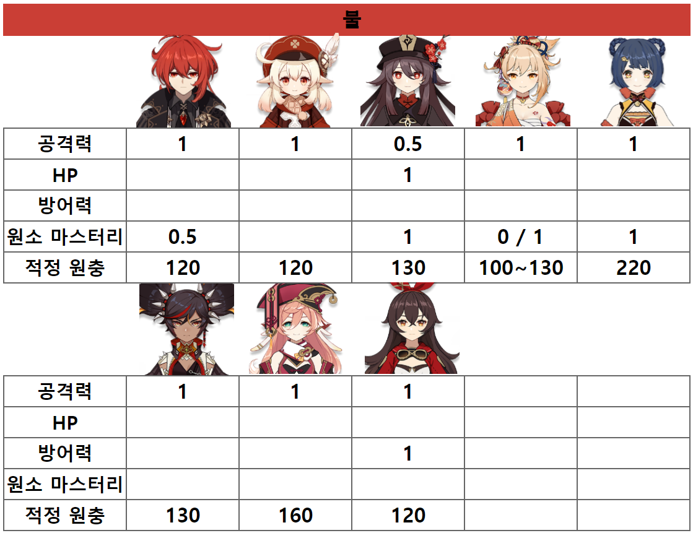
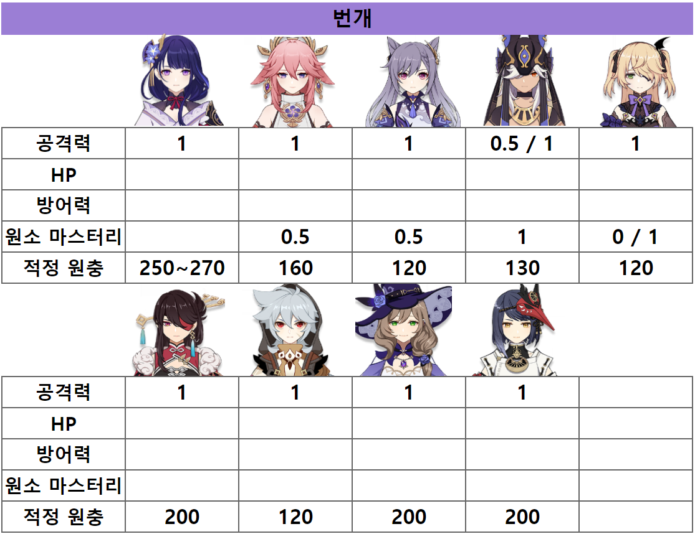
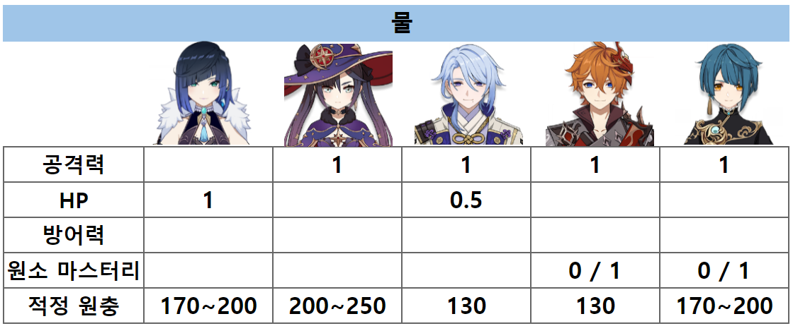
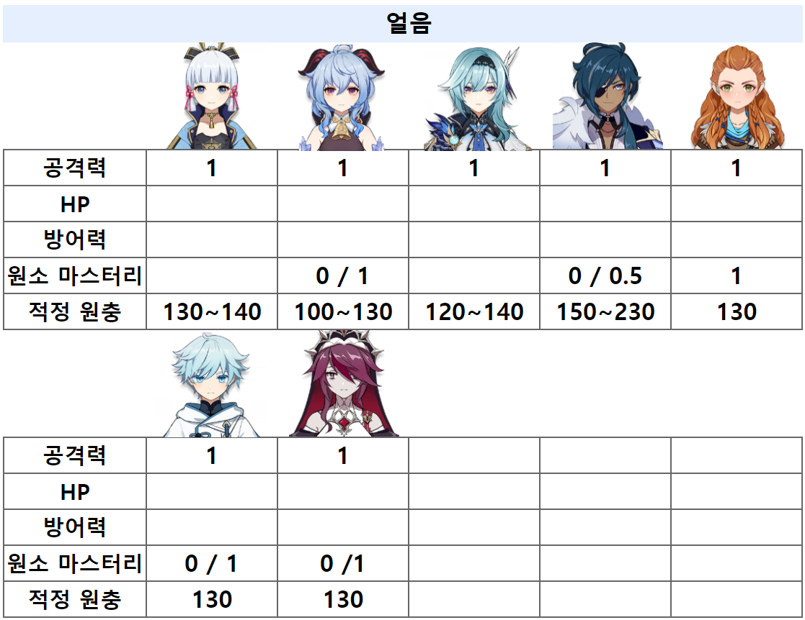
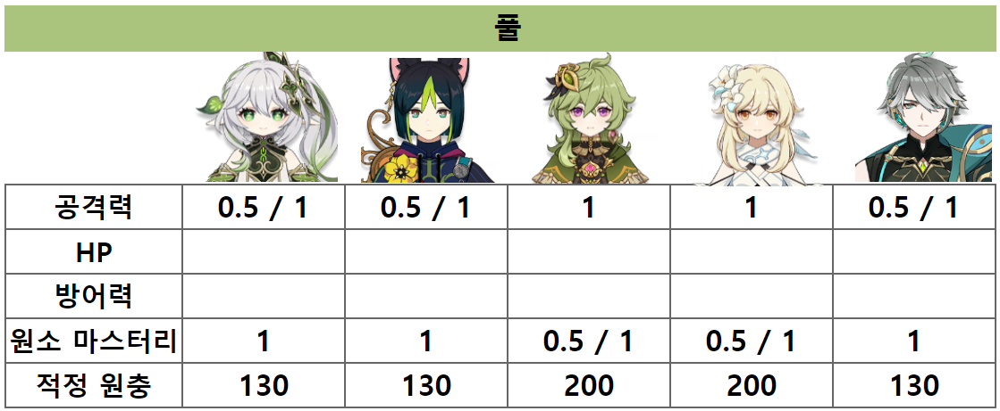
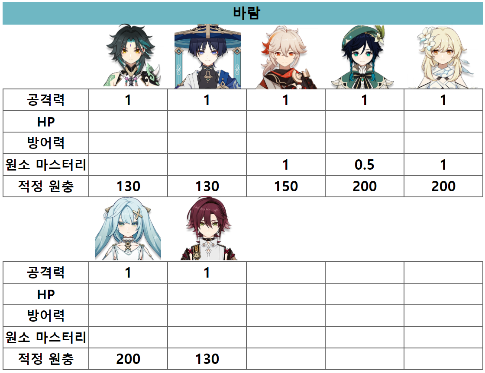
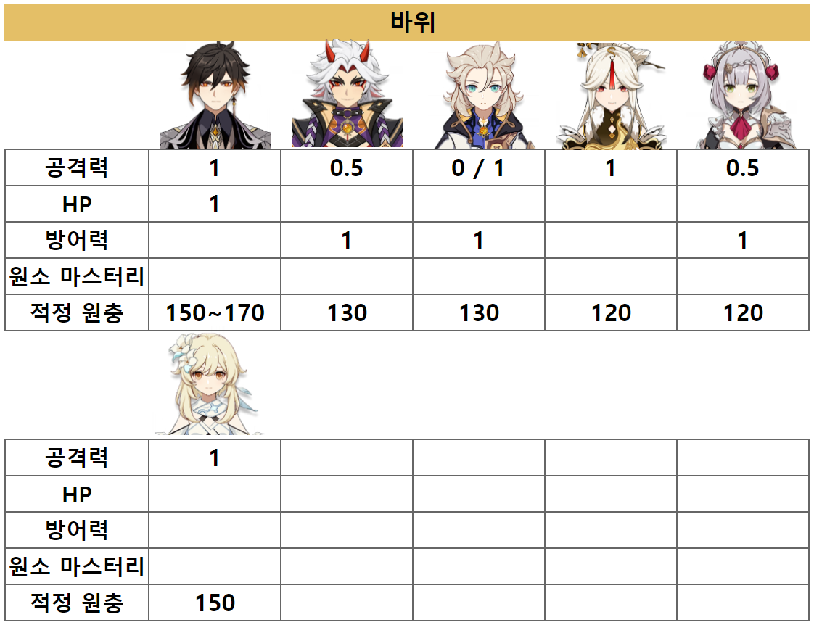

상황에 따라 공% 효율이 달라지므로
보정 여부를 판단하면 됨(1 or 0.5)
대표적으로 무기or캐릭 특성이 원마비례
스텟증가일 경우 공% 효율이 낮아짐
ex)나히다,알하이탐,사이노 등
※ 아래 표는 원신 유투버 자료를 참고하여 만듬







제작자:목련&클레나리
《딜러용 성유물 계산기》
Score 개념
성유물의 부옵션 중 캐릭터에게 유효한 수치만 합산 후
부옵션 평균을 나눈 값
ex)6 Score 성유물 = 유효한 부옵이 6개 정도 있음
유효옵션 판별
공격력,HP,방어력
캐릭터의 딜링능력에 사용되어지는 옵션수치만 입력 원소마스터리
원소마스터리가 딜링에 유효옵일 경우만 입력 원소충전효율
궁을 전혀 사용안하거나 원소충전효율이 전혀 필요없는 캐릭일 경우 입력x
스텟 보정
일부 캐릭 중 특정 옵션이 유효하지만
타 옵션에 비해 효율이 떨어지는 경우 0.5배로 보정 후 계산
ex)호두,나히다 - 공격력 0.5보정
다이루크 - 원소마스터리 0.5보정
적정 원충 수치
궁 사이클이 부드럽게 굴러가기위한 원충 수치
무기,파티,돌파 등 개인 상황에 맞게 정의
ex)무기 - 페보,크시포스
파티 - 공명,배터리
돌파 - 1돌 야란 170%
성유물 Score 등급
꽃&깃털
시계
성배&모자
준종결
6이상~7미만
5이상~6미만
4이상~5미만
종결
7이상~8미만
6이상~7미만
5이상~6미만
극종결
8이상~9미만
7이상~8미만
6이상~7미만
극한
9이상~
8이상~
7이상~
Total Score
딜러는 치확 치피 비율 1 : 2이상(치확 최소 60이상)
그리고 궁 사이클이 부드럽게 굴러가는 적정원충에 수렴할경우 유의미한 수치
(원충자체가 전혀 필요없는 캐릭은 성유물 계산에 입력하지 말것)
Total Score 보정
공격력,HP,방어력,원소충전효율,원소마스터리 중
딜링에 유효한 옵션이 2개 이하 일 때
3개 이상인 캐릭보다 파밍난이도가 어렵기에
Total Score에5%를 추가하여 기준 등급조정 (Score변동없음)
ex)Total Score가 34일경우 종결이지만
보정할 시 35.7이기에 극종결로 표기
Total Score 등급
준종결(25이상 ~ 30미만)
라이트하고 극도의 효율 등급
종결(30이상 ~ 35미만)
더 파밍하면 효율이 극도로 낮아지는 졸업가능한 등급
극종결(35이상 ~ 40미만)
어디서든 자랑가능한 종결급 내에서 상위권인 등급
1점 올리는데 몇달이 소요됨
극한(40이상 ~)
확률적으로 한계수치에 도달한 천운의 영역등급
랭킹사이트 기준 100위권 이내